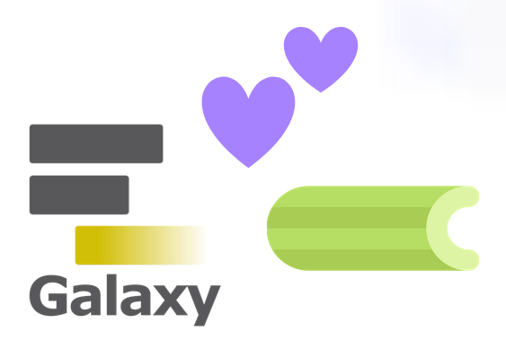
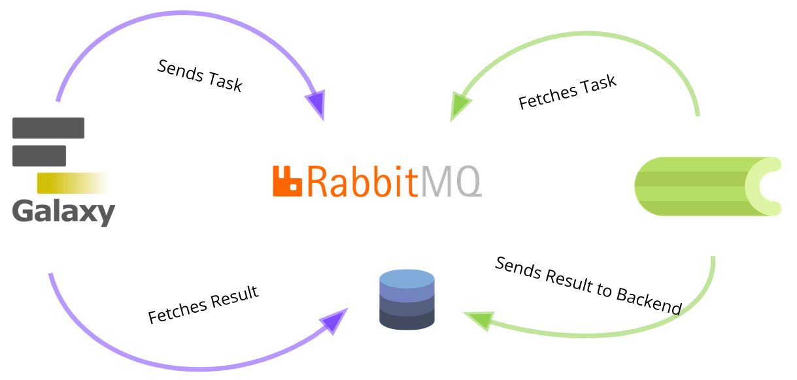
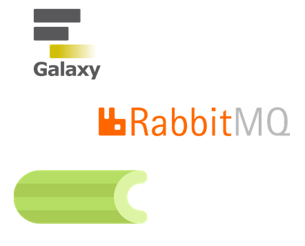
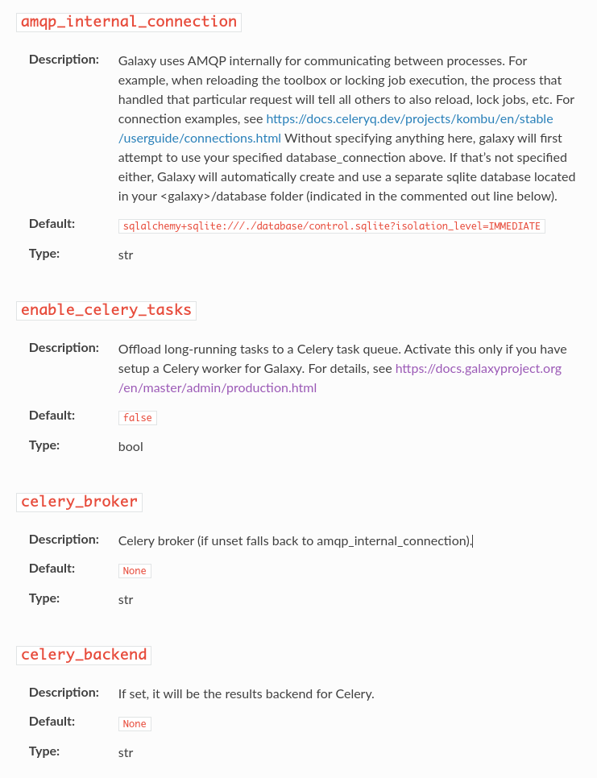
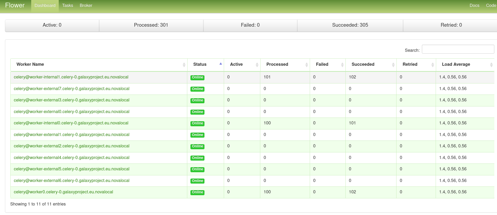
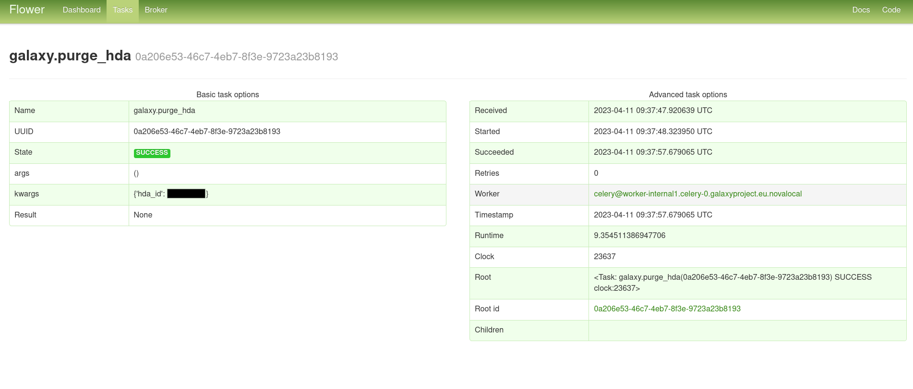

Galaxy and Celery
Contributors
| Author(s) |
|
| Editor(s) |
|
Can you eat it?
.pull-left[ Celery is an asynchronous distributed task queue.
It consists of:
- Your Application that sends tasks
- To a broker with queues
- Celery workers that execute the tasks
- A result backend to store the task results
It’s written in Python, multiple other languages are supported. ]
.pull-right[ ]
So many features
.pull-left[
- Different worker/process pool options, depending on your needs – I/O or CPU bound
- CeleryBeat a scheduler for repeated tasks
- Flower, a monitoring interface for
- Showing tasks, queues and workers
- Prometheus + Grafana integration ]
.pull-right[ ]
How does Celery improve Galaxy?
The Problem
The Galaxy Server should respond quickly to every request.
While this is easily possible for small instances with few users,
when scaling to thousands of users and millions of jobs,
without Celery, Gunicorn and the job handlers spend much of their time on I/O bound side tasks,
for example packing a zip for history export.
This leads to slow responses and scheduling.
.pull-left[ The Solution
Queue asynchronous tasks with Celery
on a different node or even a whole cluster…
]
.pull-right[  ]

How does the magic work?
- Celery loads the Galaxy code from NFS when you start the workers
- Workers connect to the broker and fetch tasks from the queue
- Since all the python modules are already loaded, it can execute the task directly, with almost no delay
- Now it runs the code according to the task, for example a SQL update, or a file deletion on the NFS
- Results are either sent directly back to the broker or stored e.g. in a Redis DB
What is Celery used for
- Processing upload jobs
- Processing metadata
- Recalculating disk usage
- Purging datasets
- Changing datatypes
- Preparing compressed downloads (histories, etc.)
- Creating PDFs for Galaxy workflow reports
- Cleaning up short term storage
- Preparing history exports . . .
.pull-left[
What do you need to enable Celery?
- A properly set up broker, for example with UseGalaxy.eu RabbitMQ Ansible Role
- A result backend, e.g. a Redis server, for example with geerlingguy’s Ansible Role
- A shared filesystem (e.g. NFS) to which you export Galaxy’s root dir and which is mounted on the Celery nodes
- Optional: Flower, the Celery UI, for example with UseGalaxy.eu Flower Ansible Role ]
.pull-right[  ]
.pull-left[ ]
.pull-right[
Where to get Celery?
- It is in your Galaxy virtual environment (
venv) already! - Mount the Galaxy root with
venvand config dirs on your Celery node - Create an Ansible Playbook e.g. with UseGalaxy.eu’s Systemd Role
- For inspiration, you can check out GalaxyEU’s vars file ]
.pull-left[  ] .pull-right[
How to set the Galaxy Config
- Configuration in
galaxy.ymlfile - Documentation still WIP
- To connect to your broker,
celery_brokercan be set. Defaults toamqp_internal_connectionotherwise celery_conftakes basically all documented options- Set your
result_backend/ Redis connection here - Celery, Flower and RabbitMQ are all well documented ]
.pull-top[
How to monitor Celery
In the Flower dashboard you can monitor your workers live.
The screenshot below shows all registered workers and their status.
]
.pull-bottom[  ]
.pull-top[
How to monitor Celery Tasks
In the ‘Tasks’ tab, you can click on each individual task and see all its details, like
args, timestamp, worker, result and stack trace if it errored.
]
.pull-bottom[  ]
Take Home Message
- Celery is a nice way to load off computation from your head-node
- On the other hand you have to maintain a broker and monitor your Celery node/cluster
- If you have strong load fluctuations, you might need to find a way to scale your Celery cluster flexibly
- Not necessarily needed for smaller instances, but can be considered, if your head node has too high load or I/O
Thank you!
This material is the result of a collaborative work. Thanks to the Galaxy Training Network and all the contributors! Tutorial Content is licensed under
Creative Commons Attribution 4.0 International License.
Tutorial Content is licensed under
Creative Commons Attribution 4.0 International License.